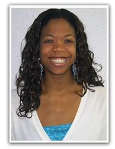

Dr. Sheila Flemming-Hunter
A Ph.D. in African and African American History, Sheila has served in the professoriate at several universities including Bethune-Cookman University, University of Texas, University of Maryland and Clark Atlanta University. She spent most of her years in the academy as historian, dean and vice president. As professor her goal is to empower students to see the world as a continuum of humanity and to encourage them to find their niche in it. She is author of Bethune-Cookman College 1904-1994: The Answered Prayer to a Dream and she has contributed articles on Nelson Mandela and Mary McLeod Bethune in published works and reviewed textbooks for the UNA/USA. Her teaching and research interests include the history of black higher education, African and African American history, with special emphasis on women and race relations.
Sheila is also an entrepreneur. In 2006, she and her husband, Robert, established Immeasurable Favor, LLC (“IF”.) A limited liability company, “IF” was established in Memphis, TN and until November 2010 did business as “Right at Home in Home Care and Assistance” (RAH). Their company was among the top twenty of 300 RAH franchises in America that provided homemaker, companion and personal support services for mostly elderly and disabled people in their homes. The business grew to include more than eighty employees and nearly as many clients. The franchise was sold in 2010 at a 500% rate of return on the original investment.
An innovative and creative thinker, Sheila has been a consultant and has many years of volunteer experience collaborating and working with local, national and international organizations on international education, race relations, women and children’s issues, strategic planning, and capacity building. She was a leader of the Daytona Beach, FL Chapter of the United Nations Association and she was a consultant for the acclaimed PBS film made in Senegal, West Africa, “Archbishop Desmond Tutu and Dr. John Hope Franklin: Race and Reconciliation in the 21st Century”. Sheila served on national boards of the United Methodist Church as staff and volunteer and she is a member of the Virtual Library Project Advisory Committee of the Congressional Black Caucus Foundation. Past National President of the Association for the Study of African American Life and History (the Founders of Black History), she is currently the Chair of its National Centennial Commission. In addition, she was the Circle Leader for the Memphis Cares Mentoring Movement, an affiliate of the National Cares Mentoring Movement founded by Susan Taylor and she is Vice Chair of the National Park Service Advisory Commission for the Mary McLeod Bethune National Council House Historic Site, Washington, DC.
A resident of Atlanta, Georgia, Sheila is a global citizen having traveled to every continent with the exception of Australia. She aspires to continue to work to improve the lives of others, thereby making the world a better place.
Ayo Afejuku, M.D.
Ayo Afejuku M.D. is not only a child and adolescent psychiatrist; she is a humanitarian, loving family member, and friend to many. Ayo earned her Bachelor’s of Science in Biology from the Georgia Institute of Technology and her Medical Doctorate from the Morehouse School of Medicine, both in Atlanta, GA. She completed her general psychiatry residency at Emory University from 2006-2009 where she received many accolades and awards, was a class representative, and aided in residency recruitment. She chose to further specialize in Child and Adolescent Psychiatry in a fellowship in 2009 to follow her dream to work with children with severe mental illnesses. In 2011 Ayo served as the chief resident of her program where she taught fellow residents, participated in administrative processes, and gained more experience in mental health systems. During fellowship she began her involvement in national advocacy for children with mental illness, by participating in advocacy training for psychiatrists and traveling to Washington D.C. for the American Academy of Child and Adolescent Psychiatry’s (AACAP) Advocacy Days at the capitol. She has also been the recipient of the AACAP educational outreach award (2008 & 2010) received a travel grant from GPPA for advocacy, and presented a clinical case conference at the AACAP 57th Annual Meeting in New York City.
Ayo continues to be passionate in advocating for vulnerable and underserved populations. She is dedicated to serving her community with efforts to overcome the stigma of mental illness, and strives for on par treatment of mentally ill individuals. She has instituted numerous programs within organizational systems like juvenile justice and child and family services in order to bridge the disparities gap in behavioral health. She considers service a calling and has participated in a medical mission trip, obtained awards and grants for educational outreach, and contributed to community and research projects. Ayo co-authored a case report published in Psychosomatics in 2013:Bifrontal Meningioma presenting as Post- Partum Depression with Psychotic Features, and has another written work in development. She hopes to add to the scholarship of and education about mental health, especially children.
While continuing her career in medicine, she strives to be a pioneer for positive change within the healthcare system, the legislature, and her community.

Alero Afejuku, J.D.
Alero Afejuku, J.D. is a licensed attorney who has lived in Georgia for the past two years. She completed her undergraduate degree in English and Spanish (1995-1998) at the Florida State University. She also completed her masters in International Affairs (1998-1999) at the Florida State University. After completion of her masters she taught English and Social Studies to middle school and high school students in Quincy, Florida and Winter Park, Florida.
After that experience, she decided to attend law school (2001-2004) at the University of Florida where she became a summer associate with a corporate law firm; completed an externship at the United States District Court, Northern District of Florida; and participated in the Virgil Hawkins Legal Clinic. Upon completion of her law degree, she worked as a Staff Attorney for the Second Judicial Circuit Court. This experience inspired her to work closely with accused criminal defendants as an Assistant Public Defender in the Public Defender’s Office in the Seventh Judicial Circuit in Daytona Beach, Florida. She later worked as a Senior Program Attorney with the Guardian Ad Litem Program to advocate for abused, neglected and abandoned children in the dependency system. In 2008, she moved to an urban school district in the Atlanta metro area where she worked as an Employee Relations Officer in the Office of Internal Resolution/Employee Relations.
She has taught for Argosy University for four years as a full time faculty member online and is currently serving as an Assistant Professor of Criminal Justice. She is also working as a solo practitioner in the area of criminal law, civil law, education law, and juvenile law. She is the proud mother of an active toddler.